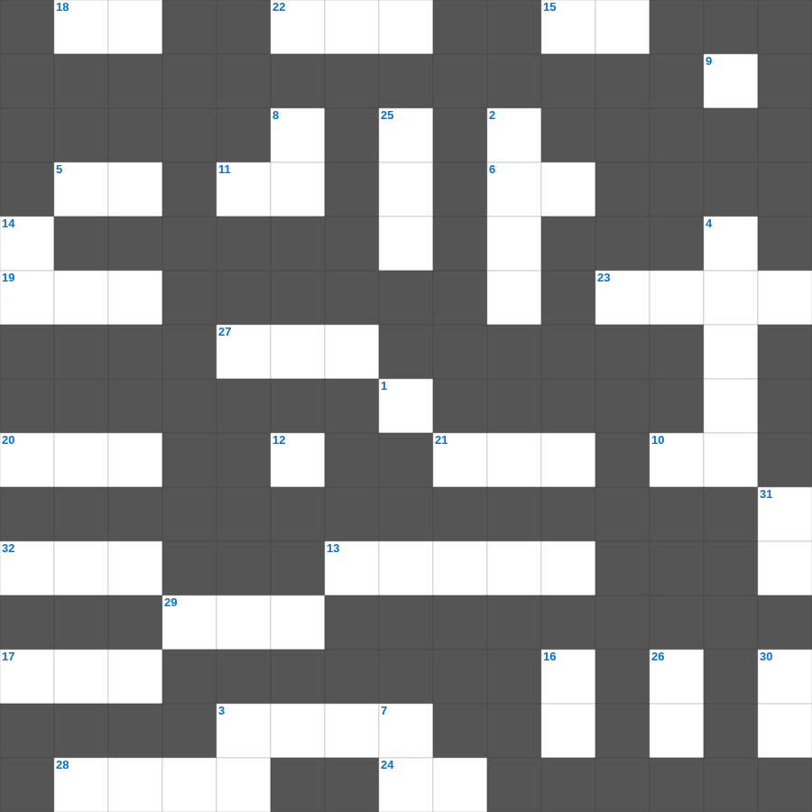

성령의 은사
📌 서비스 정의
십자가로세로는 교회 주보와 주일학교에서 사용할 수 있는 성경 기반 가로세로 퍼즐 서비스입니다. 성경 인물, 사건, 핵심 구절을 바탕으로 제작되었습니다. 온라인 풀이 및 인쇄 기능을 제공합니다.
📖 이 글은 어떤 내용인가요?
성령의 은사는 교회를 세우고 성도를 돕기 위해 하나님께서 각 사람에게 주시는 영적 능력입니다. 고린도전서 12장에는 지혜의 말씀, 지식, 믿음, 병 고침, 예언, 방언 등 다양한 은사가 언급되며, 이는 교회의 유익을 위해 사용되어야 합니다. 이 퍼즐은 성령의 은사에 관한 성경의 가르침을 살펴봅니다.
📚 핵심 포인트
지혜와 지식의 은사 · 믿음과 병 고침의 은사 · 예언과 방언의 은사 · 은사의 다양성과 한 성령 · 은사와 사랑(고전 13장)
오늘은 성령의의 주요 내용을 담은 성령의 주일학교 퀴즈를 준비했습니다. 총 35개의 힌트가 있으며, 주일학교 교재나 성경공부 자료로 활용하기 좋습니다. 무료로 즐기는 성령의 가로세로 퍼즐을 지금 바로 풀어보세요!

📝 가로 힌트
1. 첫 번째 재앙: 강물이 이것이 됨
3. 떡 다섯 개와 물고기 두 마리로 오천 명을 먹이심
5. 안식일에 밀 이삭을 잘라 먹은 제자들
6. 성령의 9가지 열매 중 첫 번째
9. 가인이 아벨을 죽인 도구(전통적 해석)
10. 하나님은 모든 사람이 구원을 받으며 이것을 아는 데 이르기를 원하시느니라
11. 야곱의 사다리 환상 장소
12. 오직 정의를 이것 같이 흐르게 할지어다
13. 구하라 그리하면 너희에게 이것을 주실 것이요
15. 땅 끝까지 이르러 내 이것이 되리라
17. 에덴 동산에서 아담과 하와가 쫓겨난 일
18. 예수님이 부활 후 고기를 구우신 숯불
19. 부지중에 지은 죄를 속하기 위한 제사
20. 예수님의 옷자락을 만져 나은 병
21. 예수님이 세례받으신 강
22. 대제사장의 흉패에 박힌 열두 보석 중 하나
23. 양의 뿔로 만든 나팔
24. 네 이것을 공경하라
27. 모세가 가나안 땅을 바라보며 죽은 산
28. 성경 인물 중 가장 장수한 사람은?
📝 세로 힌트
2. 멜리데 섬에서 바울을 문 동물
3. 수고하고 무거운 짐진 자들아 다 내게로 이것
4. 언약궤 안에 들어있는 세 가지 중 하나
6. 노아의 방주에 비가 내린 일수
7. 베드로와 안드레의 직업
8. 야곱이 사다리 환상을 본 곳
12. 모세가 반석을 치자 나온 것
14. 예수님이 우리 죄를 대신해 죽으신 은혜
16. 믿음의 이것으로 악한 자의 화전을 소멸함
25. 끝까지 이것하는 자는 구원을 얻으리라
26. 의의 이것 신경(호심경)
30. 보이지 않는 것들의 실상이요 바라는 것들의 증거
31. 하나님께 예물을 드리는 시간
🧑🏫 교회 교육 자료 활용
이 퍼즐은 주일학교 교재 추천 자료로 활용할 수 있고, 주일학교 주보에 넣기 좋은 분량으로 구성되어 있습니다. 수업용 주일학교 교안에 활동지로 붙이거나, 예배 후 복습용 주일학교 공과교재로 바로 사용할 수 있습니다.
🏷️ 키워드
성령의 주일학교 퀴즈, 성령의, 십자가로세로, 성경퀴즈, 말씀퀴즈, 가로세로퍼즐, 주일학교 교재 추천, 주일학교 주보, 주일학교 교안, 주일학교 공과교재